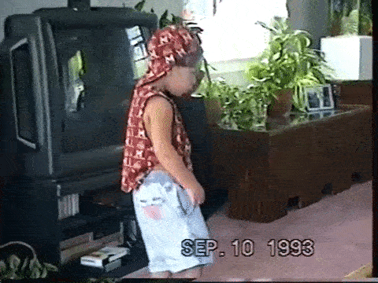

Derek Torsani
📬 derektorsani@gmail.com
🌎 @dmtors
Bachelor of Fine Arts, Graphic Design, MICA / mica.edu
2008 — 2011 / Baltimore, MDOracle, Senior Product Designer / oracle.com
2018 — PRESENT / Remote Full ResumeSignals Mobile Design System / alarm.com
2018SamCart eCommerce Web App, Lead Designer / samcart.com
2016 — 2017Halfdollar Budgeting Tools / halfdollar.org
2015 — PRESENTWeiigh / weiigh.com
2017 — PRESENTFriendsAnonymous / friendsanonymo.us
2017 — PRESENTGrey Area / heygreyarea.com
2018 — PRESENT Portfolio Examples Available Upon RequestAutomatic Content Translation / In Progress
PRESENT100 Days of Animated Design Prompts / Article / Project
2016Google Design Explorations / Article
2016Looping Logos / Project
2015The Show/Hide Eyeball / Article
2015Sandals Resorts App / Case Study
2015🎶 Music / SoundCloud
📷 Photography / Unsplash
🎥 Filmmaking / Vimeo
📝 Writing / Medium
Sleeping to 8am is considered sleeping in for me. I like to get an early and productive start to my day. I also enjoy going out at night, either to see a show, go dancing, or to be active outside.
My diet consists of mostly vegetables and legumes. It's just what works best for my body.
I take care of my self; my body, my mind, and my soul.
I'm not big on the gym, but I workout daily, ride my bike, skateboard, and play ice hockey.
I don't spend much time on social media. I don't like seeking attention.
The books I read are usually about the balance between humanity and nature through environmental science, human rights, and personal enlightenment.
I play a variety of instruments including drums, bass, and guitar. I also produce music, and am definitely my toughest critic.
My relationship with God is a personal and ever evolving one.
My M.O. is to love people for who they are, serve others and spread kindness, and always value the education and understanding of people different than myself.
I'm close with my family, but I also thrive off some distance and alone time. I enjoy traveling to new and old places, meeting new people, and having meaningful and sometimes uncomfortable conversations typically following the maieutic approach. It's okay to disagree, but important to accept. That's the beauty in individuality.
I keep my mental and physical spaces tidy and organized. It helps my mind to not be strangled and gives me the ability to think more freely. I don't like having many objects. There are some material things I love to have which feed and spark my creativity, but I don't need much.
I don't feel the world or anyone owes me anything. I also don't like owing anyone anything. If I tell you I'm going to do something, I'm going to do everything I can to do it.
Financial stability is important to me, and I'm a frugal fellow, but I also enjoy splurging on a good experience and donating to anyone doing something impactful and meaningful with their resources.
I collect unique coins and paper currency, but I must either find or be gifted them. I thoroughly enjoy untangling things, such as necklaces and cables. I stared death in the face when I was five months old, but I believe I was kept here for something much larger than myself.
Altruism plays an important role in my career. I've found that I need to spend my day-to-day making positive and meaningful impact with a team of genuine people. Working a flexible schedule remotely has proven to nourish my most productive self. I am most motivated when I can focus in my own space, on my own time, and with the ability to travel and live my personal life to the fullest. In this environment, I am able to be loyal, dedicated, and have the strong work ethic that I have learned from my entrepreneurial family.
Discipline and determination help me accomplish my goals, of which I make a lot. There's too much to gain in this life to pass on opportunity. Sometimes you have to push through the heat to get to the sun. I try not to fret on the things of the past or the things of which I do not have control over, and I always try to learn from my experiences. Onward and upward.
📚 Please reach out if you have any book recommendations. :)
🏀 Dribbble
🖋 CodePen
🐈 GitHub
